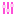

Speed
Controls movement speed along an Orbital path.
Modifier clip coming
Used by
Strands
AvailableVanilla source
vfx_Potion_health_medium / trails
Orbs
AvailableVanilla source
demister_ball / demister_ball
Cores
AvailableVanilla source
SurtlingCore / attach/core
Flames
AvailableVanilla source
demister_ball / effects/flame/flames
Embers
AvailableVanilla source
demister_ball / effects/flame/embers